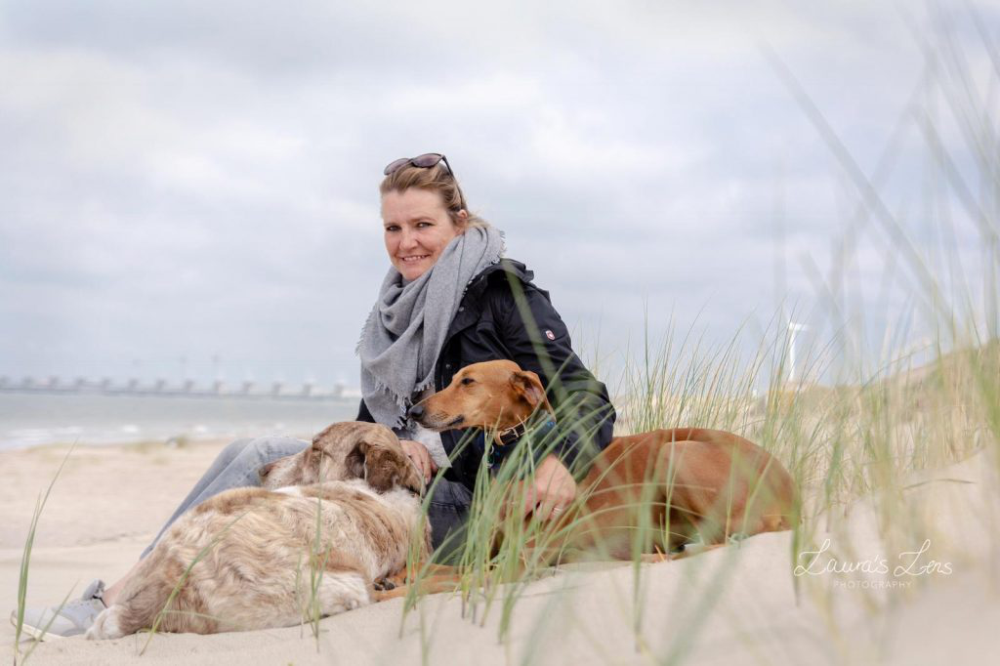
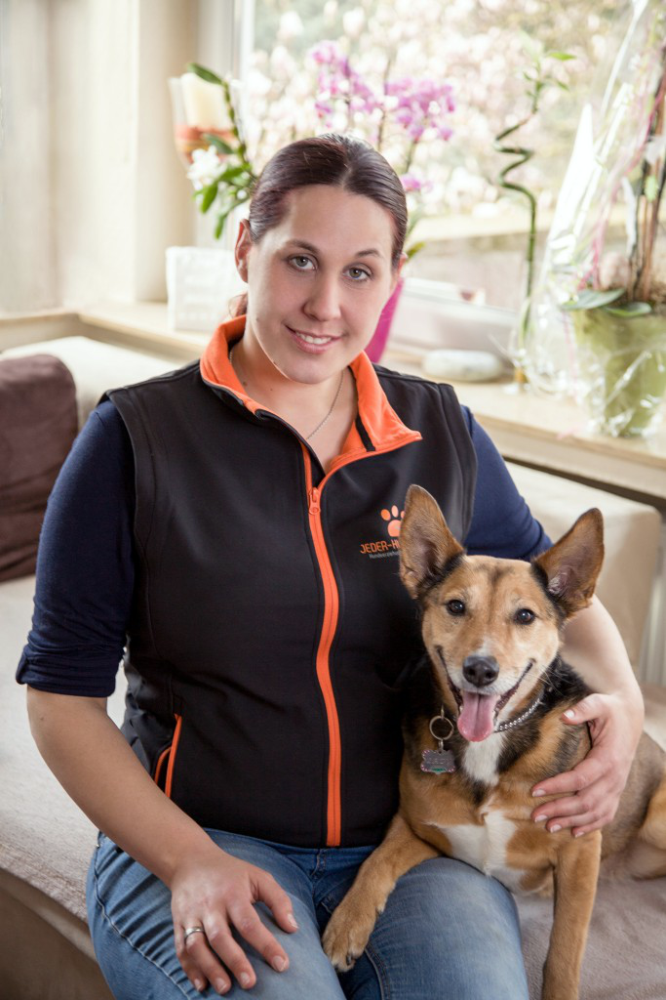

TRAINING
Individuelles Training oder Gruppentraining: Beim Einzel-Training legen wir individuelle Lernziele für Sie und Ihren Hund fest und arbeiten in den Übungsstunden daran, diese zu erreichen.
SEMINARE
Von der Kommunikation mit Ihrem Hund bis hin zur Erstversorgung - in theoretischen und praktischen Seminaren vermitteln wir Ihnen zusätzliches Wissen rund um Ihren besten jahre
TIERHEIM
Im Rahmen einer gemeinsamen Gutschein-Aktion mit dem Tierheim Remagen wollen wir es den "Langzeitinsassen" einfacher machen, ein neues Zuhause finden. Durch die Aktion konnten
Wir helfen Ihrem Hund:
Über uns:
Schön, dass Sie hier sind! Die gute Nachricht zuerst:
Jeder Hund kann- Ihrer auch!
Ist das nicht gut zu wissen? Doch eins nach dem anderen- zunächst stellt sich die Frage,
warum Sie hier sind….
Der tägliche Spaziergang wird zum Spießrutenlauf, weil Ihr Hund an der Leine zerrt, Mensch
oder Hund anpöbelt oder gern seine eigenen Wege ohne Sie geht? Besuche empfangen Sie
nur noch ungern, weil Ihr Vierbeiner sich unmöglich aufführt?
Sie haben das Gefühl, Sie verstehen nicht, was in Ihrem Hund vorgeht und umgekehrt?
Sie stehen frustriert in der Pampa, weil Ihr Hund Sie für irgendein Fellbüschel hat stehen
lassen und Ihre lauten Rückrufe außer einem wohlklingenden Echo im Wald nichts bewirken?
Wenn Sie sich in einer oder mehreren der obigen Aussagen wiedererkennen können, dann sind Sie
bei uns goldrichtig.
Sie wünschen sich einen ausgeglichenen Vierbeiner an Ihrer Seite, der zuverlässig auf Ihre Signale
hört und entspannt mit Ihnen durchs Leben geht?
Jeder Hund kann das, auch Ihrer! Und das ist gar nicht so schwer.
Der Weg dorthin führt über ein Verstehen der Bedürfnisse und Sprache Ihres Hundes- kennen Sie diese,
können Sie besser mit Ihrem Hund kommunizieren. Gerne übernehme ich die Rolle des Vermittlers
und helfe Ihnen dabei, sich gegenseitig besser zu verstehen und Ihre gesteckten Ziele zu erreichen.
Nach einem ausführlichen Vorgespräch und Kennenlernen erarbeiten wir ein individuelles
Trainingskonzept, welches genau auf Ihren Hund und Ihrer beider Bedürfnisse zugeschnitten ist.
Anschließend setzen wir gemeinsam dieses Konzept in regelmäßigen Trainingseinheiten um, bis
Sie und Ihre Hund zu einem eingespielten Team geworden sind und Ihre gesteckten Ziele erreicht
wurden. Dabei bestimmen ganz allein Sie, wie schnell oder langsam wir vorgehen. Haben wir durch
unsere Vorarbeit die wichtigsten Anliegen geklärt, können Sie bei unseren Themenspaziergängen
oder Gruppenstunden neue Erfahrungen sammeln, weitere Ideen für den Alltag gewinnen und sich
auch mit anderen Hundebesitzern austauschen.
Oft ist es auch möglich, Ihre Herausforderungen im Gruppen- statt im Einzeltraining zu meistern.
Hierzu können Sie gern an einer Probestunde teilnehmen um dieses Angebot kennenzulernen.
Melden Sie sich doch einfach bei mir, damit wir uns ganz bald kennenlernen können.
Herzlichst,
,
Christa Witsch-Steinhaus

Hallo mein Name ist Christa Witsch-Steinhaus.
Ich habe bei Jeder Hund kann meine Ausbildung
gemacht und arbeite nun als Trainerin im Bereich
Hennef, Oberkassel, Königswinter, Bad Honnef und Bonn.
Meine Spezialgebiete sind neben der Familienhundeausbildung:
Nasenarbeit
Trickdogging
Crossdogging
Antijagdtraining
Die Arbeit mit Hunden aus dem Tierschutz liegt mir besonders am Herzen,
da mich selber 2 Tierschutzhunde begleiten.
Meinen ersten eigenen Hund bekam ich mit 12.
Seit 2011 begleitet mich mein Herdenschutzhund-Mix Rüde Sinto.
Durch Sintos Wesen und Vorgeschichte besuchte ich selber mehrere
Hundeschulen und beschäftigte mich intensiv mit dem Thema
Hundeerziehung. Was ich in den vergangenen Jahren gelernt habe ist,
dass es im Hundetraining für jede noch so groß erscheinende
Herausforderung eine Lösung gibt.
Drei Jahre später kam meine Azawakh-Mix Hündin Sombra hinzu, die
ebenfalls aus dem Tierschutz ist.
Ich freue mich darauf, Sie und Ihren Hund persönlich kennen zu lernen und
beim Training zu begleiten.
Mobil: 0170-8362760
Christina Brennscheid

Hallo mein Name ist Christina Bennerscheid.
Hunde begleiten mich schon mein Leben lang.
Vor 10 Jahren bekam ich meine erste eigene
Hündin aus dem Tierschutz die mich vor viele
Herausforderung stellte.
So fing ich an mich schnell und immer mehr für das
Thema Hund zu interessieren und besuchte das
Hundeaktionszentrum in Rheinbach. Hier begann ich
bald als Co Trainer und so nahm die Geschichte
seinen Lauf. Ich vertiefte meine Ausbildung in der
Kölner Hundeakademie und besuchte viele Seminare.
Desweiteren bin ich:
geprüft vom Veterinärsamt Bonn nach §11 Abs 1. Nr. 8f des
TierSchG Hundetrainerin des Tierheim Remagens
Dozentin der Kölner Hundeakademie
anerkannte Sachverständige nach LHundG NRW
Im Training ist mir der Spaß und die Motivation von
Hund und Halter sehr wichtig. Ich arbeite viel über die
Körpersprache und über das gegenseitige Vertrauen.